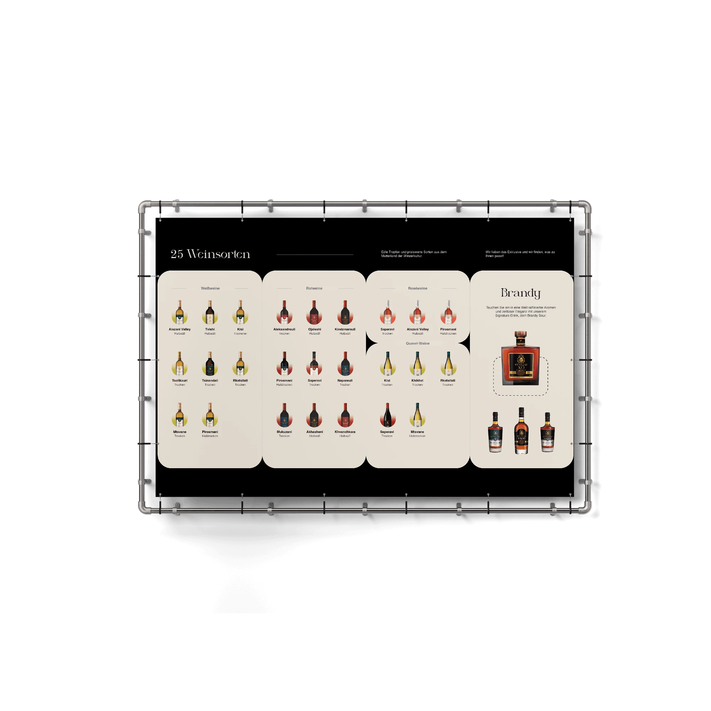
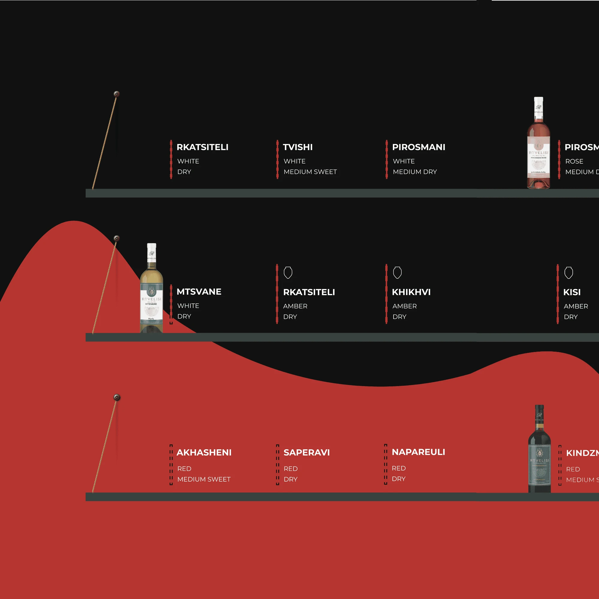
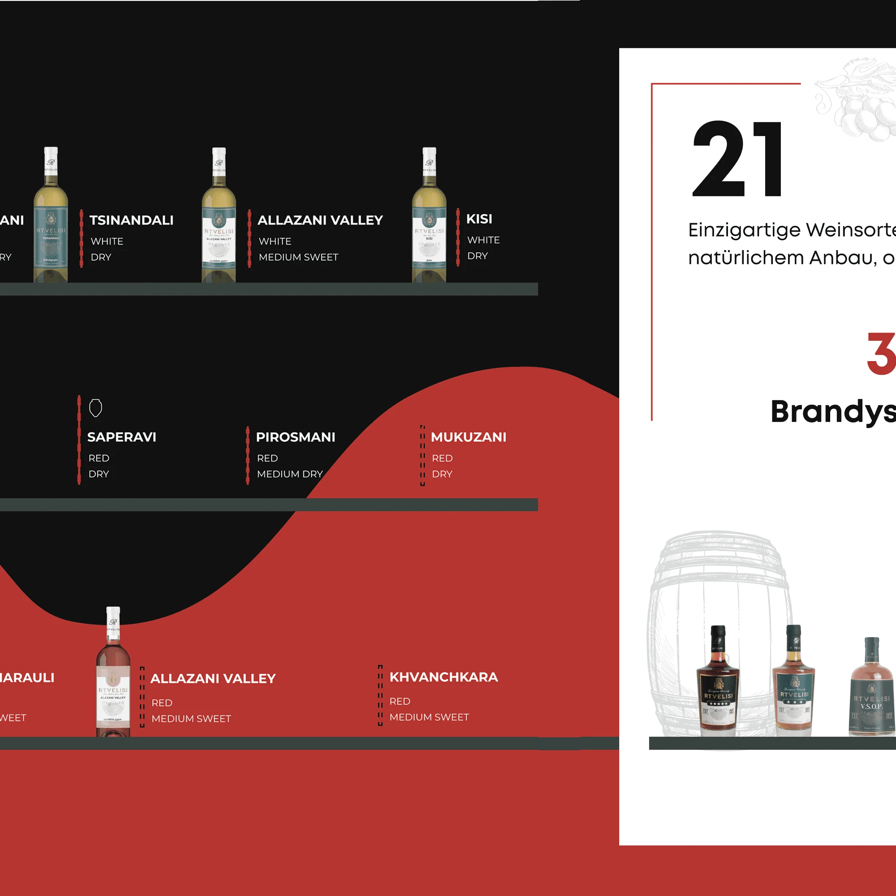
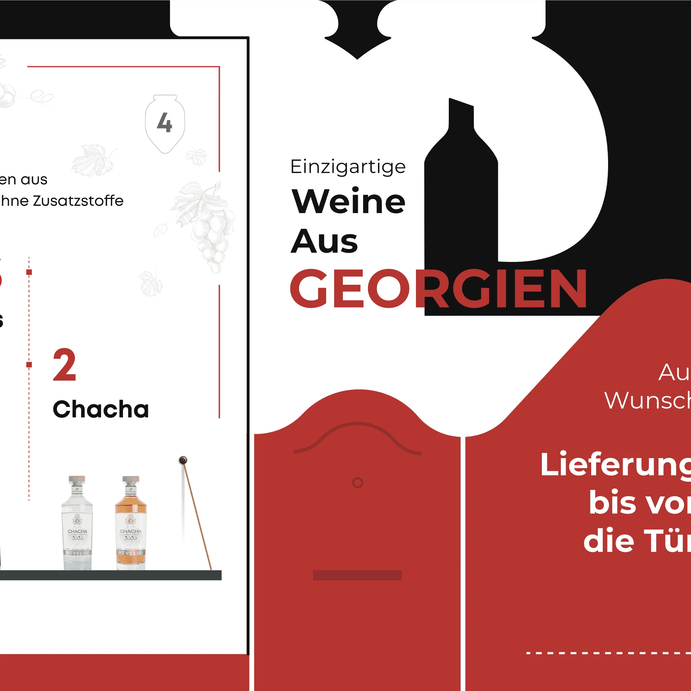
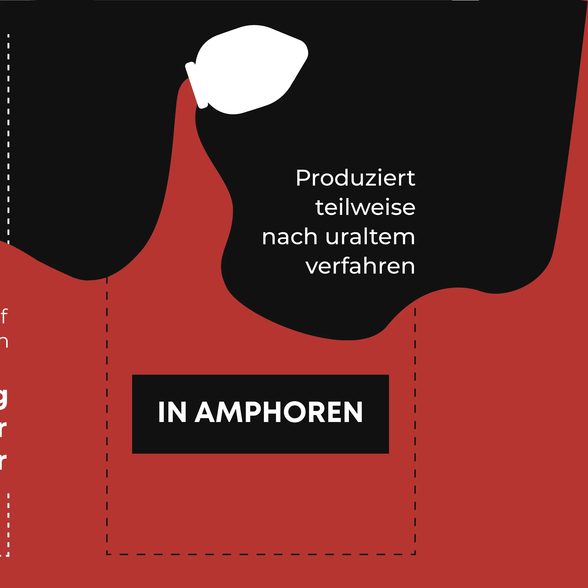
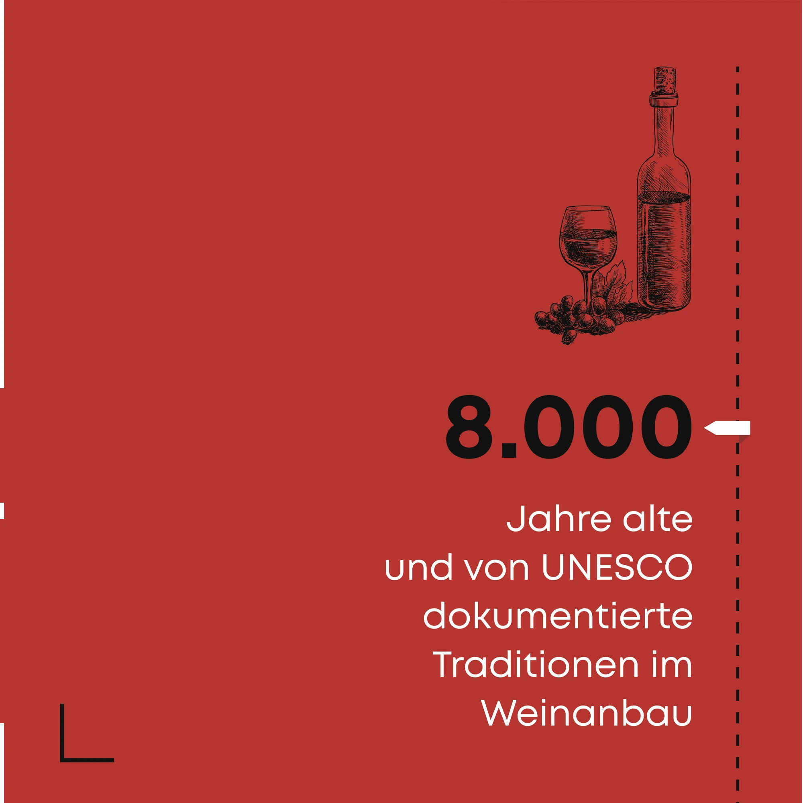

01 / Wine e-commerce
Weinachy
Posters & banners
Created for Weinachy, an Austrian wine e-shop, this banner was designed for their appearance at a wine exhibition in Berlin, Germany. The concept was bold and immersive: one large poster split into five individual pieces, each standing as a visual fragment of a bigger story. My goal was to reflect the brand’s confident, modern voice through dynamic layout and expressive typography—while ensuring each segment worked on its own and as part of the whole.











